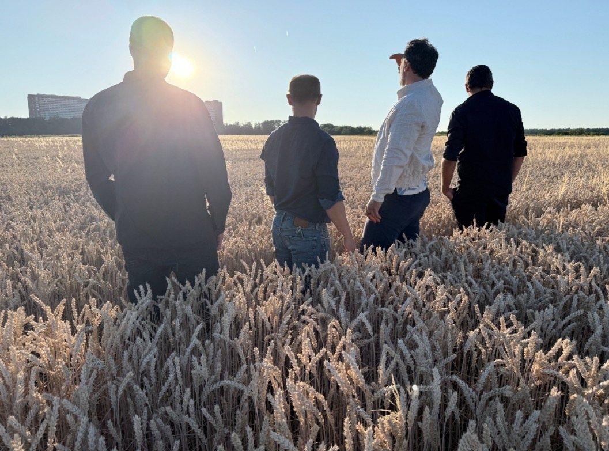
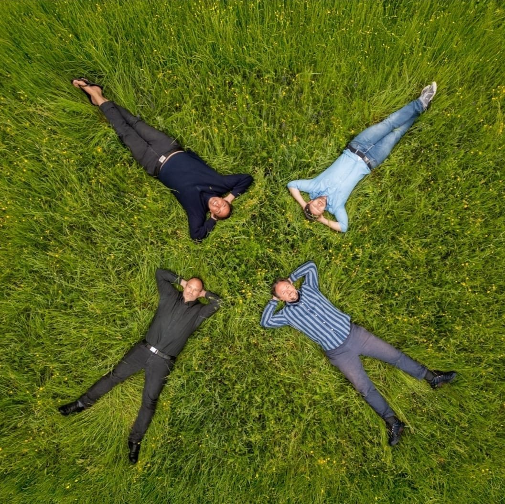

felden
Akustische Musik · Leinfelden bei Stuttgart
Akustische Musik · Leinfelden bei Stuttgart
Ein musikalisches Feld, in dem immer wieder Neues entstehen kann.

2020 stand die Welt still, wir waren alle gezwungen, uns zurückzuziehen. Es war die Geburtsstunde von „Klein-Lukas“, einem Duo zweier alter Freunde, die sich bereits an der Uni kennengelernt hatten.
In ihrer vorherigen Band „Lukas“, die sich durch die äußeren Umstände auflösen musste, hatte Heiner Gitarre und Hermann Bass gespielt. In der Abgeschiedenheit eines alten Tübinger Ballettsaals entstanden zwischen den beiden neue Klänge. Heiner übernahm dabei den Gesang, Hermann die Gitarre.
Aus dieser vertrauten Nähe entstanden akustische Klänge, die auf die unterschiedlichen Genres verwiesen, aus denen die beiden kamen. Der Song Deeper erinnerte an den Seattle-Grunge der 90er Jahre, Golden People eher an einen verrauchten Soul-Club der 70er, Happy on the Road an den barocken Ballsaal eines gefräßigen Fürsten. Verantwortlich für diese Vielfalt waren die Ungezwungenheit und das Vertrauen, das die beiden beim gemeinsamen Musizieren zuließen.
2021 – 2022Etwa ein Jahr später kam Christian dazu, der das Duo mit seinen virtuosen Beats auf der Cajón und den magischen Klängen eines Didgeridoos ergänzte. Erste Auftritte folgten 2022.
2023Schließlich schloss sich Uli mit seinem Keyboard dem Trio an. Der Organist war bereits in den Jahren vor 2020 Mitglied von „Lukas“ gewesen. Durch den Einfluss von Christian und Uli veränderte sich die Musik noch einmal, wurde breiter und bunter – und dennoch versuchten die vier, die Zärtlichkeit und das Ungezwungene dabei nicht zu verlieren.
2024Die Band nahm ihren heutigen Namen an: felden. Er geht zurück auf den neuen Probeort in Leinfelden bei Stuttgart, steht aber auch für die natürlichen, unverstellten Klänge der vier Musiker, deren wichtigste Grundlage das Loslassen, das Aufeinander-Hören und das gegenseitige Vertrauen ist.
2025Unter der zauberhaften Sensibilität des Tontechnikers „Magic“, alias Yannik, dem fünften Mann im Bunde, entstand ein erstes Album. Weitere Auftritte folgten.

Beim Abspielen wird das Video von YouTube (Google) geladen. Dabei werden Daten wie deine IP-Adresse an Google übertragen. Mehr dazu in der Datenschutzerklärung. Direkt auf YouTube ansehen
Gesang
Gitarre
Cajón, Didgeridoo
Keyboard
Ton


Neuigkeiten, Konzerte und Anfragen – am schnellsten erreicht ihr uns auf Instagram. Unsere Musik gibt es auf YouTube und Spotify.